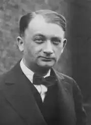

Якщо порівнювати творчість Йозефа Рота з творчістю інших австрійських його сучасників — Роберта Музіля і Германа Броха (особливо Броха), то двоє останніх — це письменники-інтелектуали. Їхня творчість ґрунтується на ерудиції, на високій книжній культурі. Обидва навіть виявляли вагання щодо форми реалізації своїх ідей — форми художньої чи суто наукової. Брох вдавався по черзі то до тієї, то до другої. Музіль же (принаймні в головному творі свого життя) їх поєднував, контамінував. Кафка, навпаки, — письменник спонтанний, але всі його метафори, всі образи тяжіють в ідеалі до граничного узагальнення, до безтілесної абстракції ледь не математичного ґатунку. Як сам він вважав — до "конструкції", хай ця конструкція й не надається до раціонального дешифрування.
Рот серед них — єдиний белетрист. Не в поганому, зневажливому, а в найкращому значенні слова. Інакше кажучи, він — митець, який писав зважаючи на читача, і, по змозі, якнайширшого. Він — творець історій — сумних, зворушливих, комічних, серед них і з власного життя, вигадник, який поетизував його ескапади й лишався байдужим до його звершень.
І він — єдиний серед них професіонал, хоча, звісно, й вельми своєрідний. Рот ішов від журналістики, від повсякденної газетярської роботи, що спонукала не тільки багато писати, а й тут же друкувати написане, віддавати в номер, який чекати не може, якому вже завтра належиться вийти у світ. Правда, він ніколи не був рабом газети, майже завжди вона залежала від нього — зірки публіцистики — більше, ніж він від неї. Його репортажі артистичні й концептуальні, перейняті настроєм, індивідуальним почуттям. Вони — етюди з натури, що невловимо переходять у довершену художню прозу. Такий його хист. І не виключено, що Рот так і залишився б чудовим белетристом, автором, що переніс у нову епоху настрої "веселого Апокаліпсису", якби не втрутилася австрійська доля. Його життя не просто трапило в соціальний вир — так було тоді з усіма. Воно — цілковито приватне життя — виявилось безпосередньо й складно пов'язаним з одним із найзнаменніших катаклізмів початку століття. І "просто" актуальне, злободенне цілковито змінилося: він відчув тривалі симптоми кардинальної зміни світу. Рот народився 2 вересня 1894 року в Галичині, тобто на крайній східній околиці Габсбурзької імперії. Місцем його народження вважається, за одними даними — село Шваби, засноване німецькими колоністами, за іншими — окружне містечко Броди, відоме як центр контрабандної торгівлі. Атмосфера кордону, строкатість слов'янського, єврейського, німецького населення, змішування й зіткнення чужих одна одній мов, звичаїв, релігій — уся ця справжня та уявна екзотика здобула батьківщині майбутнього письменника славу "дикого Заходу" Австро-Угорської монархії. Такими ж романтичними здавалися й обставини його біографії. "Моя мати, — так писав Рот, — була єврейкою міцної, близької до землі слов'янської породи, — вона часто співала українські пісні, тому що була дуже нещасна (вдома в нас співають бідаки, а не щасливці, як у західних країнах. Через те східні пісні гарніші, і в кого є серце, той, почувши їх, ладен заплакати). В неї не було грошей і не було чоловіка. Тому що мій батько, який одного разу забрав матір з собою на захід — очевидно з єдиною метою зачати мене, — покинув її в Катовицях і зник назавжди. Він був, імовірно, дивною людиною, австрійцем словенського типу; був марнотратним, треба думати, випивав і помер, коли мені виповнилося шістнадцять років, у стані божевілля. Його спеціальністю була меланхолія, яку я від нього успадкував. Я жодного разу його не бачив. Але пам'ятаю, мені, хлопчикові чотирьох-п'яти років, являвся уві сні чоловік, про якого я знав, що це — батько. Років через десять-дванадцять я вперше побачив батькову фотографію. І він був мені знайомий. Це був пан з мого сну". Навіть якщо не брати до уваги містичний сон хлопчика Рота, тут не все точно. Батько не втік, подружжя так раптово розпалося у зв'язку з першими ознаками його душевної хвороби. Після цього Марія Рот, уроджена Ґрюбель, не лишилася без засобів до існування — її підтримували заможні родичі. Йозеф закінчив класичну гімназію в Бродах, а згодом вивчав філософію й германістику у Львівському (тоді — Лемберзькому) й Віденському університетах. Маючи справу з Ротом, часто-густо натрапляєш на подібні неясності. Життя його повите легким серпанком легенди. Її творець — передусім, як ми вже бачили, сам Рот. Він часто й охоче (й здебільшого усно, а не письмово) розповідав про себе. Але інколи по-різному, оминаючи одні факти, видозмінюючи інші. То була безвинна неправда, далека від якоїсь корисливої цілі. Рот і до себе підходив як творець: переінакшував власну біографію, вишукував події й пригоди, здатні краще, на його погляд, виявити характер героя. Ще й нині деякі критики повторюють пущену кимось чутку, нібито Рот помер у лікарні для бідних: адже така смерть "личила" бездомному вигнанцю. Насправді ж його останні дні минули в добрих умовах, під наглядом славетного тоді радіолога, професора Жідона, чоловіка французької перекладачки письменника. Часом незрозуміло: Рот чинив завжди, як усі інші романісти (тобто наділяв героїв власним життєвим досвідом), чи іноді, навпаки, переймав дещо і в них. Наприклад, так і не вдалося остаточно з'ясувати, побував він справді під час війни в російському полоні, чи розповіді про це — лише відблиск пригод обер-лейтенанта Франца Тунди, протагоніста його роману "Втеча без кінця" (1927). Тим більше, що він і в житті деколи пробував грати вигадані для себе ролі — скажімо, вже після війни роль людини, яка ніби назавжди лишилася фенріхом австро-угорської армії, і намагався підкреслити це навіть кроєм костюма. Німецький письменник Герман Кестен, який свого часу приятелював з Ротом, спробував у спогадах про нього видати мало не всі еманації ротівського світовідчуття за своєрідні акторські пози, машкари: "Стара форма втечі — це маскарад. Старий вихід для трагіків — комедія… Він носив машкару солдата й легітиміста, австрійця, католика, насмішника й страдника, пророка й романтика, новатора й традиціоналіста, мудреця й людини пристрастей, в мене виникало навіть відчуття, ніби він носив машкару п'яниці". Однак повернімося в передвоєнний габсбурзький Відень і його університет. Там Рот слухав лекції з літератури у Вальтера Брехта й був помічений професором як обнадійливий поет, а також як автор невеликих імпресіоністичних етюдів у прозі. За станом здоров'я Рот був визнаний непридатним до військової служби. І близько двох років це його — людину, налаштовану антимілітаристськи, — цілком влаштовувало. Але 1916 року він раптом пішов на фронт добровольцем. Парадоксальність була в натурі Рота. Вона виявлялася й у вчинках, і в деякій розщепленості, неузгодженості характеру. П'яниці, як правило, безладні, необов'язкові, бездіяльні. Рот у цьому сенсі — дивний п'яниця, який фанатично любив порядок. Час його був якнайсуворіше розподілений: дні віддавалися роботі, вечори — бару чи пивниці. Він працював щоденно, наполегливо, по шість-вісім годин поспіль, на тумбочці готельного номера чи за столиком кафе. Лише завдяки цій каторжній праці (яка багато чим нагадувала працю флоберівську) він за якихось півтора десятки років написав чотирнадцять романів, не кажучи вже про оповідання, репортажі, судові звіти, рецензії на книжки й вистави. А вночі його оточували веселі гульвіси. Він і сам був веселим гульвісою. Говіркий, товариський, завжди доброзичливий і готовий прийти на допомогу, він викликав симпатію. Не дивно, що в нього було дуже багато друзів, причому в найрізноманітніших суспільних сферах. Такий образ людини легковажної, що нібито бездумно живе, не дуже поєднується з письменницькою глибиною, з жорсткою вимогливістю до себе як стиліста, з меланхолією, до якої Рот справді був схильний. І ще менше поєднується він з ротівським католицизмом і легітимізмом останніх років життя. Тому Кестен і вважав, ніби все це — тільки машкари… Про воєнні роки Рота відомо небагато. Здається, він і в армії подеколи щось редагував, щось писав. У 1918 році, коли імперія вже впала, він з'явився у Відні й швидко зробив журналістську кар'єру. Втім, злет прямо-таки запаморочливий почався 1920 року, після переїзду в Берлін. Там Рот став одним з найпопулярніших і найвище оплачуваних кореспондентів. Він подорожує західною, південною, східною Європою й пише про все, що бачив. Але найчастіше — про повоєнну розруху, заворушення, кризи, горе, біду, зубожіння, людську неприкаяність. Його репортажі з'являються в різних газетах. Найтісніше пов'язаний він був із "Франкфуртер цайтунг", яка дотримувалася поглядів помірковано-ліберальних. Але професійні успіхи — лише оманливе тло тяжкої особистої драми. 1922 року Рот одружився з віденкою Фридерікою Райхер, і разом з нею в коло його життя вдруге ввійшла душевна хвороба. Настали роки неперебутньої муки. Приватні клініки й санаторії забирали левову частку гонорарів, а стан дружини безперервно погіршувався. З 1930 року Фридеріка взагалі не виходила з лікарні. Вона на рік пережила чоловіка, ставши жертвою нацистської акції "ліквідації психічно неповноцінних". Рот стверджував, що почав пити на фронті, рятуючись від холоду. Думається, сімейна трагедія відіграла тут ніяк не меншу роль. Але головна причина — це помноження індивідуальної ситуації на загальну, політичну. Невдовзі після приходу Гітлера до влади Рот, який ненавидів фашизм, полишає Берлін. Він мандрує по готелях Праги й Варшави, Брюсселя й Остенде, Амстердама й Відня, Цюриха й Парижа. Здавалося, це те ж саме, що й раніше, життя роз'їзного кореспондента, — змінилися лише назви газет, які його друкують. Але на теперішній мандрівний побут Рота падає тінь вигнанництва. Він відчув себе емігрантом ще перед 1938 роком, коли "аншлюс" відібрав у нього останній уламок батьківщини. Віднині її замінник — "Кафе де ля пост" у Парижі. Там, у Парижі, Рот і помер 27 травня 1939 року. На кладовищі Тіє, в південній частині міста, зібралися еміґранти, французькі письменники, товариші по чарці, декілька жінок у глибокому траурі; дві-три з них — у вдовиних очіпках, що підкреслювали їхні особливі права на покійного. У творчості Рота звичайно знаходять два періоди, вельми помітно один від одного відмінні.